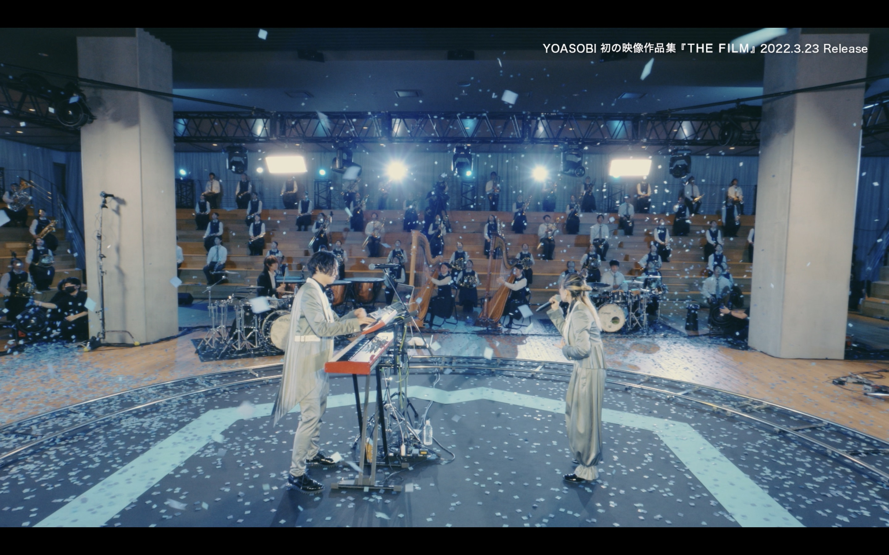

YOASOBI appeared for the first time in the 71st NHK Red and White Song Festival as a singer in the red group, the group has not yet released a record, it is an exception to participate in the Red and White, and this is also their first time to sing on TV. Red and White Song Festival is an annual New Year's Eve television special produced by Japanese public broadcaster NHK. It is broadcast live simultaneously on television and radio, nationally and internationally by the NHK network and by some overseas (mainly cable) broadcasters who buy the program. The show ends shortly before midnight. Before the show began broadcasting on television in late 1953, the show was held on 3 January and only consisted of a radio broadcast.
Yoasobi has many live concerts and performances these years.
Tour Yoasobi Arena Tour 2023 (2023) One-off Keep Out Theater (2021) Sing Your World (2021) Nice to Meet You (2021)
Nice to Meet You (2021) Yoasobi "Nice to Meet You" (alternatively titled Yoasobi Live at Budokan "Nice to Meet You") was the first face-to-face one-off concert and third overall hosted by Japanese duo Yoasobi in support of their second extended play (EP) The Book 2. It was held from December 4 to 5, 2021, at Nippon Budokan, Tokyo, Japan, being received 14,000 offline audiences. The concert consisted of fifteen songs from their all previous release and ran for a duration of about one-hundred and ten minutes.